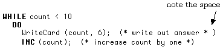

The most common syntax errors in writing repetition control structures (WHILE, REPEAT) in Modula-2 are caused by leaving out critical parts of the statements. The compiler can notify one about some of these, or the programmer may see error messages like the following. (Numbers may or may not be attached.)
31 Error in REPEAT statement 32 'UNTIL' expected 33 Error in WHILE statement 34 DO expected
In such cases, as with incorrect use of ":=" or "=", or missing semicolons, it is usually easy to find the error once the compiler points it out. A missing END can be much trickier, however, because the compiler may not flag any error at all until it reaches the END of the Module and then discovers that it is short by one END. Careful prettyprinting, particularly in blocking out DO .. END sections, should help to prevent this, but sometimes the programmer will need to ask someone else to read the code to discover the "obvious" error that has been stared at for an hour without being seen.
Another potential problem is the never-ending or ad nauseam loop. This usually comes about by specifying a Boolean condition that may never actually happen. These may be simple counting errors such as:
cardNum = 5;
WHILE cardNum # 0
DO
Statement Sequence;
card := card - 2;
END;
for which loop the flag value is passed by without being achieved. On the other hand, they may be more subtle, as in the loop:
realNumber := 10.7;
WHILE realNumber # 0.0
DO
Statement Sequence;
realNumber := realNumber - 0.1;
END;
The problem here is that REAL values, are not necessarily represented exactly, and because of rounding-off errors, realNumber may never equal zero. Its value may get very close to zero, but miss by a small fraction. If possible, it would be better to use, say:
realNumber := 10.7;
WHILE realNumber > 0.0
DO
Statement Sequence;
realNumber := realNumber - 0.1;
END;
Better still, one could use a built-in procedure that computes the absolute value of realNumber.
realNumber := 10.7;
goal := 0.0;
WHILE ABS (realNumber - goal) < .00001 (* Is it close to the goal? *)
(* Is it close to zero? *)
DO
Statement Sequence;
realNumber := realNumber - 0.1;
END;
The case sensitivity of Modula-2 may also be a rich source of problems because of identifiers that the programmer believes match one another but that do not (myVariable is not the same as MyVariable, for instance). Beginners get messages like "Identifier not declared or incorrect class" many times until they learn to take sufficient care ahead of time to avoid this problem.
It is also important to ensure that the identifiers themselves convey information about their role in the program. The statement a := p * x * x is much clearer when written as area := pi * radius * radius, for instance. This applies to constants as well as variables, and to any other entities requiring identifiers. The rare quality of common sense is recommended in such matters.
The names of identifiers are a part of the correct internal documentation of a program.
While on the subject of constants, it is worth remembering that they are in fact constant. Many programs are rejected by the compiler because the programmer attempts to reassign a constant. Some people avoid this problem by using variables instead of constants, but it is far better to declare several constants and use them consistently than to attempt to make a variable serve for more than one of them.
However, even if the program compiles and appears to run correctly the first time, it may still contain errors. These are referred to as "run-time" or "execution" errors, and are caused by insufficient planning. Here are a number of methods for detecting and eliminating--or preventing--run-time errors.
If a program has been having trouble with a statement like WriteReal (a/b, n) for instance, the programmer can place the temporary print statements WriteReal (a, n) and WriteReal (b, n) just before the line causing the error message. Perhaps because of an earlier logical error the value of b is zero, and of course it cannot then be used as a divisor. Likewise, it may be necessary to print out the value of some counter or boolean value before, during, or after a loop. The temporary print statements can be removed when the program has been completely debugged.
Once the error has been located the incorrect code is re-designed, but with the "test prints" retained. It is then tested again. Rewriting a program to eliminate one error could have the side effect of introducing another one, so this may have to be done several times.
If the first keyboard input tried is accepted by a program that obtains its raw data in that way, there is no guarantee that it will always work as expected. If a positive number less than 10 is required, what happens if zero or a negative, or a larger number than 10 is supplied? Will it still work? Code may have to include a trap for invalid data, such as the following:
REPEAT
WriteString ("What is the number? ");
WriteLn;
ReadCard (number);
allOK := (ReadResult() = allRight) AND (number > 0) AND (number < 10);
SkipLine;
IF NOT allOK
THEN
WriteString ("Number must be between 0 and 10. ")
WriteString ("Try again.");
WriteLn;
END; (* if *)
UNTIL allOK;
As in previous examples, ReadResult is imported from SIOResults and can enquire about the result of the last invocation of the procedure ReadCard. The value of allOK (declared in the program) is in this case set by checking to see if n is greater than zero as well; if allOK is now FALSE, the input must be tried again. A ReadInt could have been used instead of a ReadCard. In that case, the value of allOK would not be FALSE due to a negative number being read, but would be caught afterward in the portion allOK := (ReadResult() = allRight) AND (number > 0) AND (number < 10).
NOTE: In programs like this one, as well as in non-standard versions employing the global variable(s) Done, care must be taken to examine or save the result of the read action before performing another Readxx for such action would leave the program with a mistaken view of the situation. This could happen if another Readxx were inserted before the IF NOT allOK on some later revision of the program. The value returned by ReadResult was therefore saved in another variable. This is particularly important when using InOut.Done, for some versions of InOut will set Done on both input and output operations. Others do not require a character read to remove the carriage return from the input stream after a Readxx. However, some do, and it is best to plan for such behaviour.
Some readers may be using other non-standard procedures such as SimpleIO.ReadCard whose syntax is indicated in the following revision of the above fragment:
REPEAT (* not even classical standard *)
WriteString ("What is the number? ");
WriteLn;
ReadCard (number, done); (* resets program variable done *)
allOK := done AND (number > 0) AND (number < 10);
Read (cr, done); (* read character after the number *)
IF NOT allOK
THEN
WriteString ("Number must be between 0 and 10. Try again.");
WriteLn;
END; (* if *)
UNTIL allOK;
In such non-standard versions, all Read procedures take a second parameter that is a program-defined BOOLEAN.
The point of all this is: Will a program work if supplied with inappropriate data or not? If not, it must have traps for bad data so that there is some action it can take as an alternative to "crashing."
It is amazing how many silly answers are accepted just because they were given by a calculator or a computer (or an economist, a politician, or a teacher). Even programmers press the wrong keys all too often. What seems like a perfectly good program producing valid results may in fact be outputting utter nonsense.
A programmer should watch for:
1) Answers that are impossibly large or ridiculously small. (Such as ending up with a million dollars in your bank account.... That's funny, I thought it was more like 74 cents.)
2) Situations that might cause large roundoff errors. The number of significant figures for a REAL is limited, so numbers close to zero may have a large percentage error. A lengthy chain of computations involving such quantities could yield very inaccurate results.
3) The computer prints the same result every time, regardless of the input data. This probably means there is the wrong identifier in a WriteCard or WriteReal statement or the programmer forgot to write the code that computes the number it is supposed to output.
4) Too many things on one line all run together. Some WriteLn statements need to be inserted in appropriate places in order to make the output more readable. One could object that poorly formatted output does not constitute a logical error, but such an objection is unlikely to impress a customer (or a teacher).
There shall be more to say about insect control in later sections of the text. As each new statement is considered, new possibilities for errors arise. Meticulous attention to detail in design, coding, and testing is the only way that these can be avoided or detected.
A great deal of a computer's time is generally spent on the execution of repetitions or loops. Such sections can often be improved (or corrected so that they work) if special care is given to the following points.
First, progress must be made toward some goal as the loop executes. There is no point in writing such things as:
WHILE count < 2
DO
number := number + 1
END
or
WHILE number1 # number2
DO
number1 := number2 + 1
END
because the required condition can never be reached (another ad nauseam loop like those earlier in the chapter). The same kind of thing might happen through carelessness, as in the following example:
WHILE count # 0
DO
count := count - 2
END;
Here, unless count is both positive and even when the loop is entered, the condition count = 0 can never be achieved.
A reader might complain that these examples are trivial and their difficulties obvious. This is correct on both counts, but spectacular and complex code may hide from sight just such follies as these. Buried in a long section inside a loop may lurk the ad infinitum dragon which forces the code into an eternal purgatory of repetition until the user presses a reset button, or the central computer decides that the program has used too much CPU time and cuts the user off the line.
Second, to improve efficiency, a loop should not perform an identical calculation on each pass. Such code should be executed before the loop begins. Thus
answer := 1;
number := 1;
WHILE number < 10
DO
realNumber := x + y + z;
answer := answer * number;
WriteCard (answer, 6);
number := number + 1
END;
should be written instead as:
answer := 1;
number := 1;
realNumber := x + y + z
WHILE number > 10
DO
answer := answer * number;
WriteCard (answer, 6);
INC (number);
END;
Note that the same kinds of considerations also apply to REPEAT loops, which have the same potential for problems as do the WHILE loops.
NOTES: 1. INC (count) has the same effect as count := count + 1, but it executes faster (although an optimizing compiler will produce the same code in many cases.) In any event, using INC takes fewer keystrokes and is less error prone. Likewise, the statement count := count + n can be replaced by the (usually faster) equivalent INC (count, n). INC is a standard identifier.
2. INC works on numeric types like CARDINAL and INTEGER (whole number types) but not on REAL. There is a corresponding DEC procedure.
The purpose of comments is to provide a road map of the programmer's reasoning in order to make the program easy to modify in the future. They can serve another purpose. While testing and debugging sections of code, a portion of the program that is troublesome can be surrounded with comment brackets and it will be effectively removed from the program at the next compilation. When using this commenting out technique to isolate errors, one must ensure that what remains is at all times a valid program. If a piece of code that is essential to the functioning of the intact portion is commented out, the test is useless.
It is the fact that Modula-2 allows nested comments that makes this method possible. If these were not allowed, commenting out sections of code that themselves contained comments (and most would) could only be achieved by extensive rewriting of the program. The compiler keeps track of how many comment brackets are opened and requires them all to be closed before the end of the program. It will report an error if this is not done. This feature also prevents the programmer from accidentally commenting out portions of the program by failing to close a comment parenthesis correctly.

Here, the first comment is not closed off because the pair "*)" has a space. If comments could not be nested (as in most Pascals), the "*)" on the fourth line would close the first one, thus neatly removing the INC (count); from the program. The Modula-2 compiler scans to the end of the program, if necessary, looking for the close of the comment and flags the error when the comment close is not found. In such cases, the programmer is not informed until the error is verified to exist and it may therefore take some time to determine the correct location of the offending code. If such a problem is reported, the editor's search-and-replace function ought to be employed to locate the "* )" typographical error. Some good programming editors also have a "balance parentheses" function that can be employed to find and correct such errors.
When a program is coded and entered with the editor, careful attention must be paid to such things as the spelling, type, and appropriateness of identifiers, the positioning of commas and semicolons, ensuring that quotes on strings are all present and are the same kind of quote (both single, or both double), closing off parentheses correctly, and properly declaring all objects (and with the same spelling) before using them.
Some notations allow Var instead of VAR, but Modula-2 does not. On the other hand, a Modula-2 compiler does not care if one puts in extra semicolons where none are actually required (before ELSE, ELSIF and END). It does complain if some are left out that are needed to separate statements, or if one is dropped into the middle of a statement, say, before the reserved word THEN. Others to watch for include a missing period at the end of a program, failure to match the module name at the END with the one in the header, and an incorrect spelling of an imported identifier or a library module. These are all errors that can be detected with a little proofreading before the first attempt at compiling.